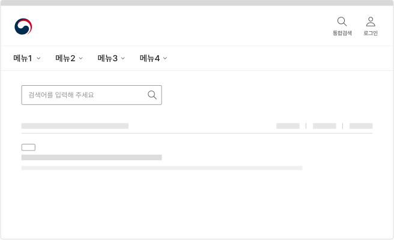

@@include("../inc/header-top.html")
@@include("../inc/guide_aside.html")
서비스 패턴 검색검색 종료
검색은 사용자가 큰 데이터 집합에서 원하는 정보를 찾을 수 있도록 도와주는 기능이다. 사용자가 무엇을 찾고 싶은지 알고 있는 경우에는 일차적인 정보 탐색 수단으로 사용될 수 있으며, 탐색 수단을 통해 원하는 콘텐츠를 찾지 못하는 상황에는 특정 정보와 관련된 단서를 제공함으로써 사용자가 필요한 콘텐츠를 쉽게 찾을 수 있도록 해준다.
사용성 가이드라인
-
검색 과업 맥락에서 벗어나 다른 페이지 또는 다른 탐색 수단에 빠르게 접근할 수 있도록 해야 한다.
필수
사용자는 검색 결과에서 필요한 정보를 발견한 경우에 검색을 종료하기도 하지만, 다른 방식을 사용하여 서비스 정보 구조를 탐색하기로 결정한 경우 검색 과업의 맥락에서 벗어나기를 시도할 수 있다. 후자의 상황을 고려하여 검색 결과 화면에도 메인 메뉴, 사이트맵 같은 탐색 인터페이스를 제공해야 한다.
[모범 사례]
[피해야 할 사례]

관련 구성 요소
컴포넌트
헤더
마크업 예시
| 1Depth | 2Depth | File Link |
|---|---|---|
| 탐색 | 통합검색 | html 화면 확인하기 |